اكتب ما تريد تلوينه واختر حتى أربعة ألوان، فيُولَّد لكل لون ناتج يحافظ على نسيج القماش والطيّات والظلال بدل طبقة لون مسطّحة. اختر ما يعجبك وطبّقه.
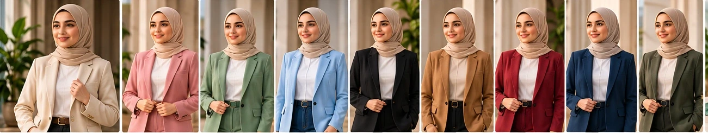
أمثلة توضيحية لتنويعات الألوان على ملابس وأحذية وأثاث وأجهزة، وليست نتائج مضمونة لصورك.
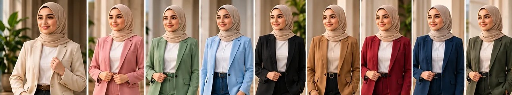
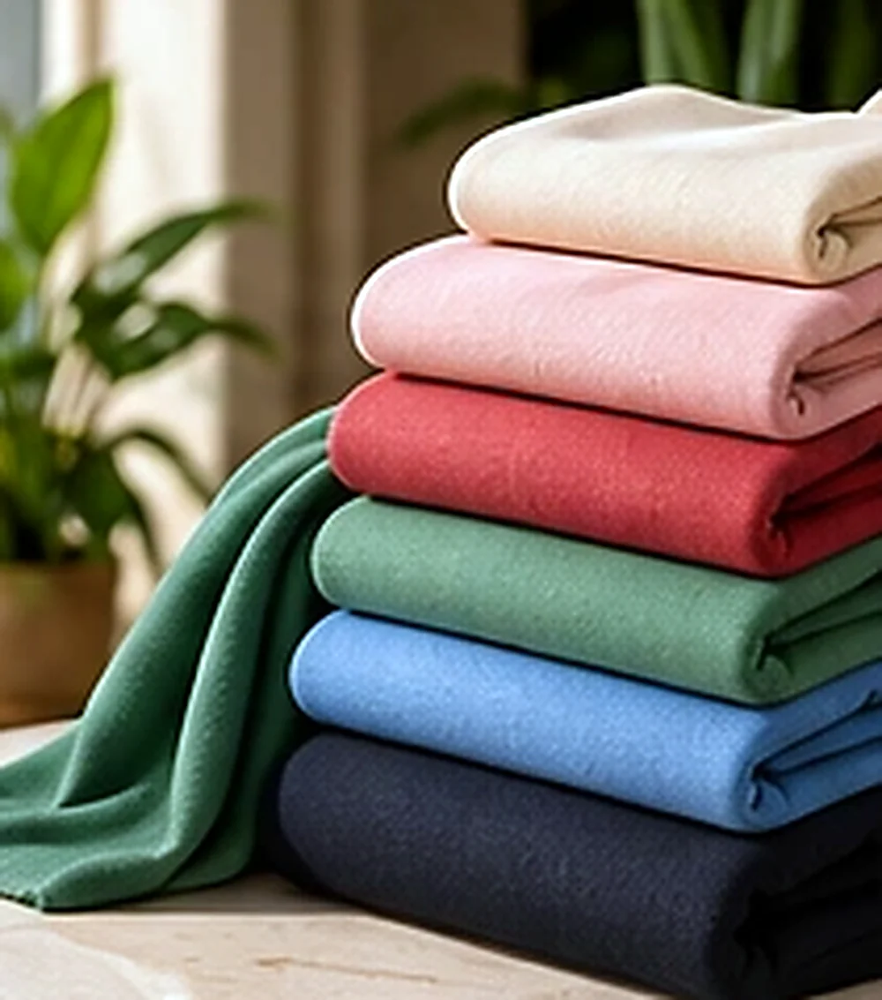
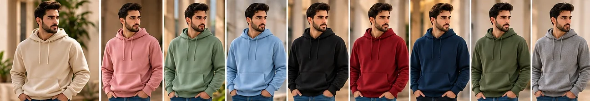
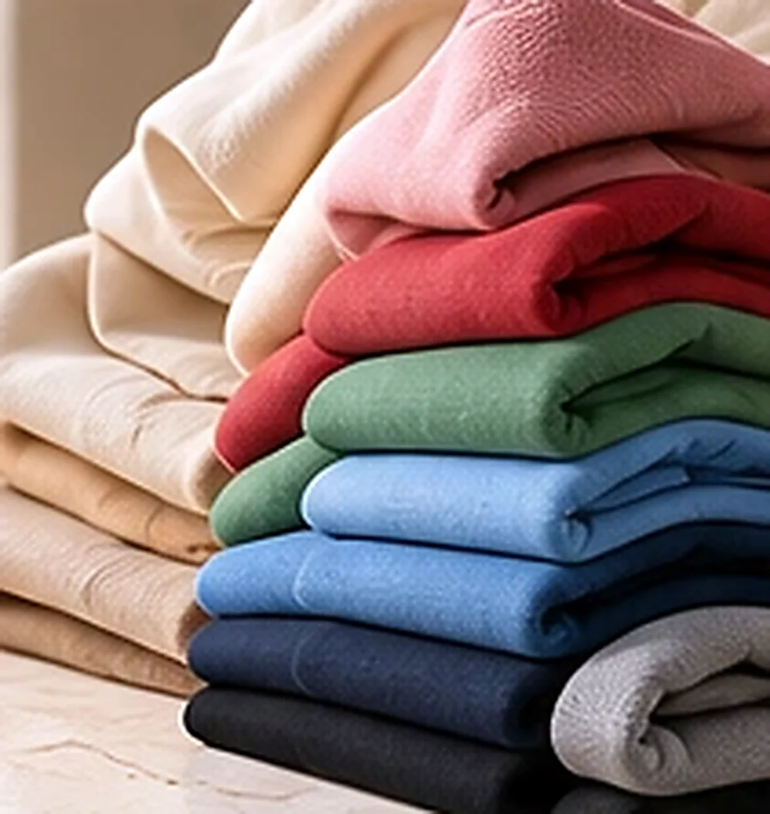
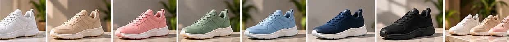
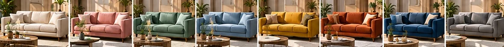
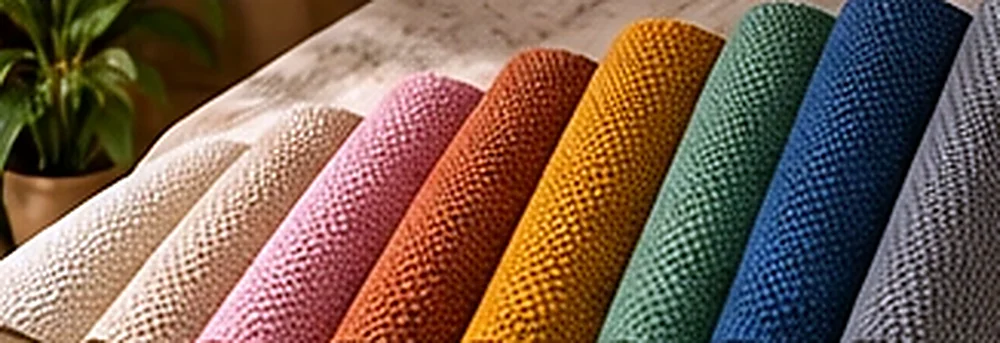
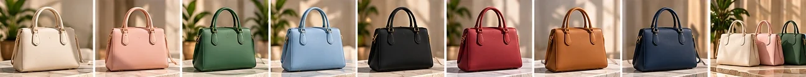
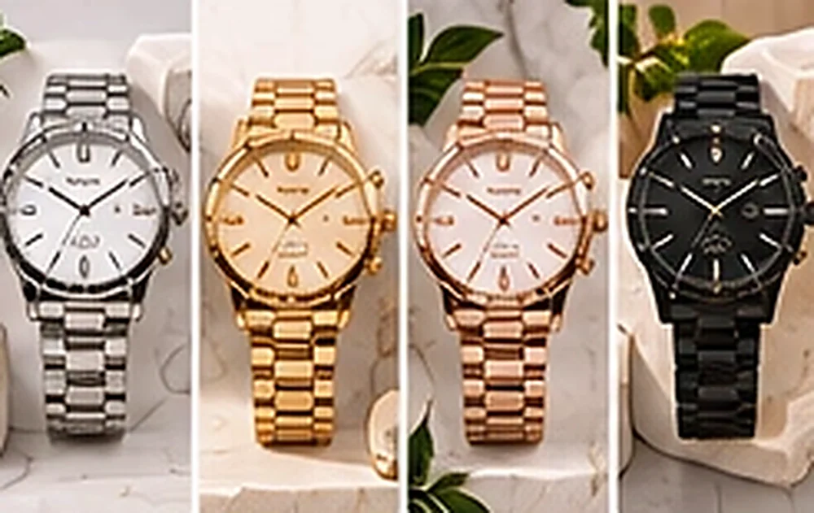
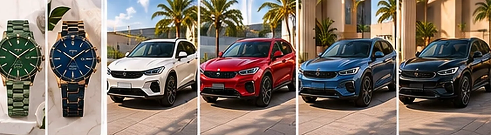
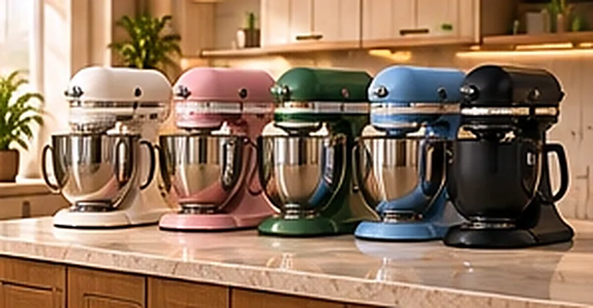
اكتب بدقة ما تريد تلوينه (مثلاً «البدلة» وليس الخلفية) واختر الألوان من القائمة أو لوناً مخصصاً. للدفعات الكبيرة استعمل «معالجة الدفعات» بخيار التلوين.
من الصورة إلى النتيجة في دقائق.
وافتح «تلوين الملابس».
اكتب ما تريد تلوينه وحتى أربعة ألوان.
وافق على التكلفة ثم اختر اللون وطبّقه.
ملابس وأحذية وأثاث وأجهزة وغيرها.
تحتاج مفتاح Alyssum API (تُحسب التكلفة وتُطلب موافقتك قبل كل تنفيذ)
إجابات سريعة عن أكثر ما يُسأل.
يتبع النموذج لا بكسلاً بكسلاً، فتتفاوت دقة الألوان المخصصة؛ راجع الناتج قبل الاعتماد.
التلوين بالذكاء يحتاج مفتاح Alyssum API وتظهر التكلفة قبل التنفيذ؛ أما التلوين اليدوي بنقرة فمجاني من «لمسات وتصحيح».
يُطلب الحفاظ على النسيج والطيّات والظلال، وتتفاوت الدقة بحسب الصورة.
نعم عبر «معالجة الدفعات» بخيار التلوين.